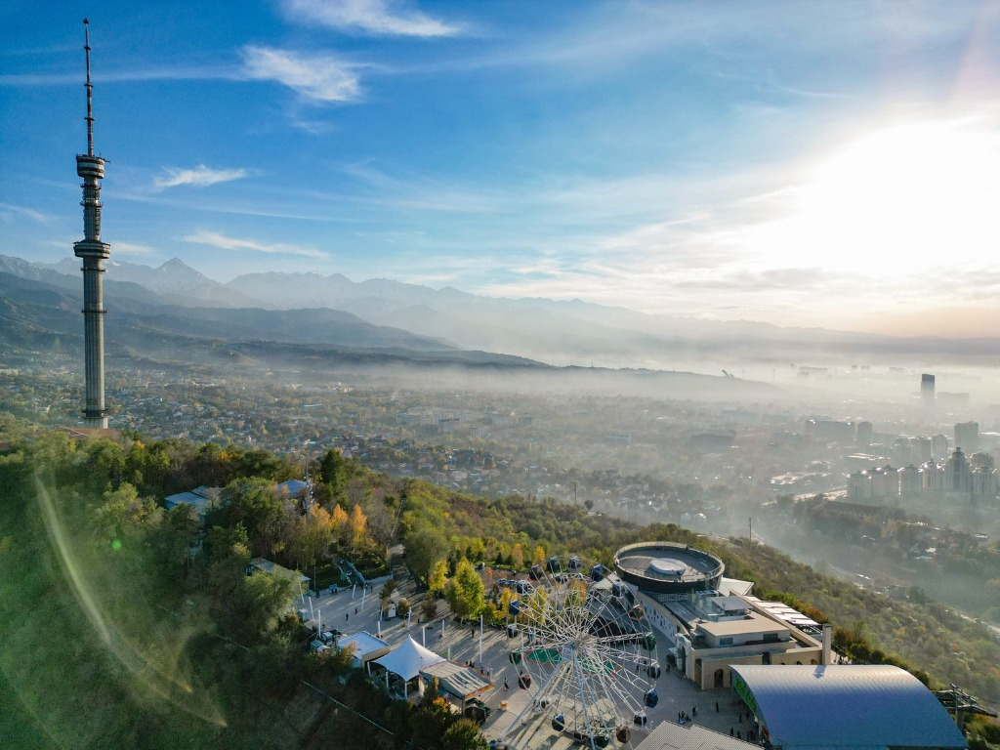
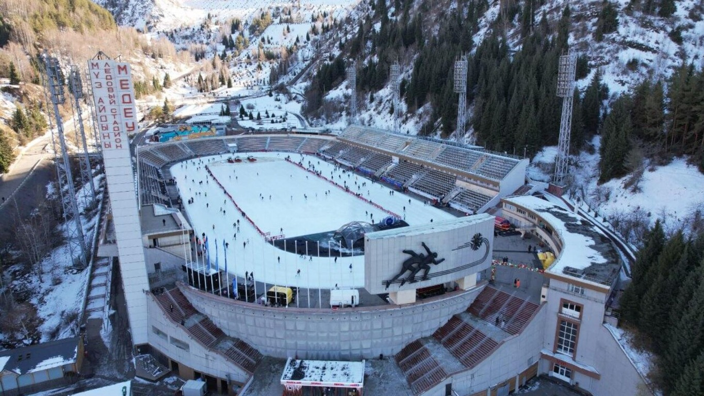
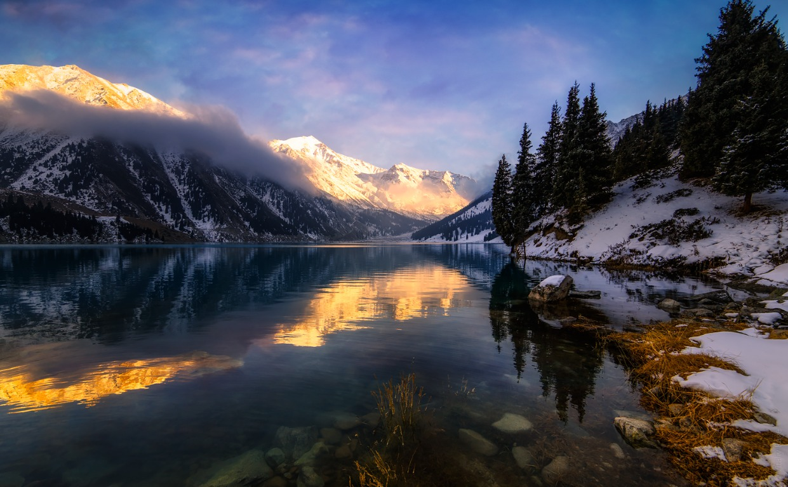

Алматы
Южная столица Казахстана · горы, панорамы и лед
Знаковые места

Кок-Тобе
С холма открывается панорама города и гор. Здесь стоит знаменитая телебашня Алматы — заметный ориентир, видимый из многих районов.

Медеу
Высокогорный каток расположен примерно на высоте 1 700 метров. Его лед славится скоростью, а горное ущелье вокруг создаёт особую атмосферу для катания.

Заилийский Алатау
Горный хребет у Алматы: хвойные леса, ледники и высокогорные озёра. На закате вершины окрашиваются в золотистый цвет.
🏙 Городские виды
Поднимитесь на Кок-Тобе, чтобы увидеть Алматы с высоты и рассмотреть горную панораму.
🌲 Природа рядом
Заилийский Алатау начинается у городской окраины: здесь доступны маршруты к ущельям, лесам и озёрам.
🎒 На заметку
В горах погода меняется быстро — даже летом захватите тёплую одежду и удобную обувь.